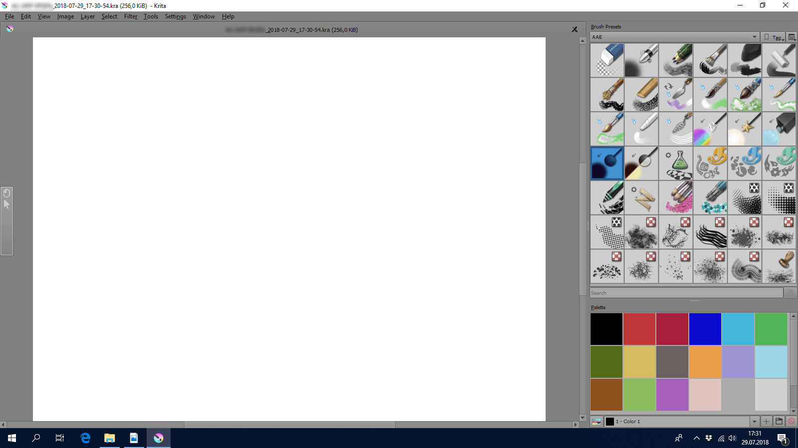

設定 Krita 以使用眼球追蹤技術的示例¶
注意
This is not a reference document. It is based on the experiences of only one user. The information might not be as applicable when using different eye tracker devices or different control software.
Eye tracker devices are becoming more affordable and they are finding their way into more computer setups. Although these devices are used by various types of users, we will mainly focus on users who have physical disabilities and can only use their eyes to interact with the computer.
If you don't already have experience with such a case, here are a few things you'll need to know before you start:
The eye tracker needs to be properly calibrated such that the pointer will be very close to the point where the user is looking at. This might be difficult to achieve, especially if the positioning of the eye tracker with respect to the user can not be fixed between different sessions.
The lack of accuracy in control makes it nearly impossible to hit small areas on the screen such as small buttons or menu items. Corners and edges of the screen might be difficult to reach too. You also don't want to put interface elements close to one another since it increases the chances of selecting the wrong element accidentally.
Mouse operations like single click, double click, right click, drag and drop, etc. all demand extra effort in the form of switching modes in the program that controls the device. You will want to keep these switches to a minimum so that the work will not be interrupted frequently.
Switching the mode doesn't automatically start the operation. You need an extra action for that. In our case, this action is "dwelling". For example, to start a program, you switch to the left double click mode and then dwell on the icon for the application to activate the double click. Adjusting the dwell time is an important tradeoff: shorter dwell times allow for faster work but are also more error-prone.
Requirements¶
Besides the obvious requirement of having an eye tracker device, you will also need a control program that will let you interact with the device. When you obtain the device, such a program will most probably be provided to you but that program might not be sufficient for using the device with Krita.
One of the basic functionalities of these programs is to emulate mouse clicks. In our case, the program provides a hovering menu which includes large buttons for switching modes between left/right mouse buttons and single/double clicks. After selecting the mode, the hovering menu can be collapsed so that it will leave more screen space for the application.
In order to make them easier to configure and use, some programs include only basic modes like single clicks. This is sufficient for many popular applications like e-mail agents and browsers, but for Krita you need the drag and drop mode to be able to draw. If the provided control software doesn't support this mode (usually called "mouse emulation"), you can contact the manufacturer of the device for assistance, or look for open source options.
Starting Krita¶
Basically, setting the control program to left double click mode and dwelling on the Krita icon on the desktop would be enough to start up Krita but there are some issues with this:
On startup, Krita asks you to choose a template. It's likely that you don't want to go through this setting every time and just want to start with a blank template.
Later, saving the document will require interacting with the file save dialog which is not very friendly for this type of use.
A workaround for these issues could be creating and saving a blank template and running a script that will copy this template under a new name and send it to Krita. Here's an example script for Windows which uses a timestamp suffix to make sure that each file will have a different name (replace USERNAME with the actual user name):
@echo off
for /f "tokens=2 delims==" %%a in ('wmic OS Get localdatetime /value') do set "dt=%%a"
set "YY=%dt:~2,2%" & set "YYYY=%dt:~0,4%" & set "MM=%dt:~4,2%" & set "DD=%dt:~6,2%"
set "HH=%dt:~8,2%" & set "Min=%dt:~10,2%" & set "Sec=%dt:~12,2%"
set "datestamp=%YYYY%%MM%%DD%" & set "timestamp=%HH%%Min%%Sec%"
set "fullstamp=%YYYY%-%MM%-%DD%_%HH%-%Min%-%Sec%"
set filename=USERNAME_%fullstamp%.kra
copy "C:\Users\USERNAME\Pictures\blank.kra" "%filename%"
start "C:\Program Files\Krita (x64)\bin\krita.exe" "%filename%"
Double clicking on this script will create a new Krita file in the same folder as the script file. Since the file already has a name, the file save dialog will be avoided. Combined with autosaving, this can be an efficient way to save your work.
小訣竅
Storing these files directly on a cloud storage service will be even safer.
You might also deal with some timing issues when starting Krita:
After the icon for Krita or for the script is double clicked and Krita starts loading, lingering on the icon will start a second instance.
Similarly, after double clicking, if another window is accidentally brought to the foreground, Krita might start up partially visible behind that window.
To prevent these problems, it will help if the users train themselves to look at some harmless spot (like an empty space on the desktop) until Krita is loaded.
Layout¶
Since the interface elements need to be large, you have to use the screen area economically. Running in full-screen mode and getting rid of unused menus and toolbars are the first steps that you can take. Here's the screenshot of our layout:
{kind=link}
You will want to put everything you need somewhere you can easily access. For our drawings, the essential items are brushes and colors. So we've decided to place permanent dockers for these.
Krita features many brushes but the docker has to contain a limited number of those so that the brush icons can be large enough. We recommend that you create a custom brush preset to your own liking.
There are various tools for selecting color but most of them are not easily usable since they require quite a high level of mouse control. The Python Palette Docker is the simplest to use where you select from a set of predefined colors, similar to brush presets. Again, similarly to brush selection, it will help to create a custom set of favorite colors.
Once you are happy with your layout, another feature that will help you is
to lock the dockers. It's possible to accidentally close or move dockers.
For example, in drag and drop mode you can accidentally grab a docker and
drag it across the screen. To prevent this, put the following setting
in the kritarc file:
LockAllDockerPanels=true
(Check the Krita 常見問題 for how to find the configuration kritarc file on your system.)
If you're using a hovering mouse control menu like we do, you also have to figure out where to place it when it's collapsed. Put it somewhere where it will be easily accessible but where it will not interfere with Krita. On the screenshot you can see it at the left edge of the screen.
Summary¶
In summary, we work as explained below.
To start Krita:
On the desktop, pull up the hovering mouse menu and select left double click mode.
Double click on the new drawing creation script. Look away at some harmless spot until Krita loads.
Drawing with Krita:
Switch to left single click mode.
Select a brush and/or color using the dockers.
Switch to drag and drop mode. You're ready to draw.
Go to the point where you want to start a stroke and dwell until dragging starts (this emulates pressing and holding your finger on the mouse button).
Draw.
When you want to finish the current stroke, dwell at the ending point until you get out of dragging (this emulates lifting your finger from the mouse button).
Repeat the whole process.
Finishing:
Switch to left single click mode.
Click on the button for closing the window.
When warned about unsaved changes, click the button for saving the file.